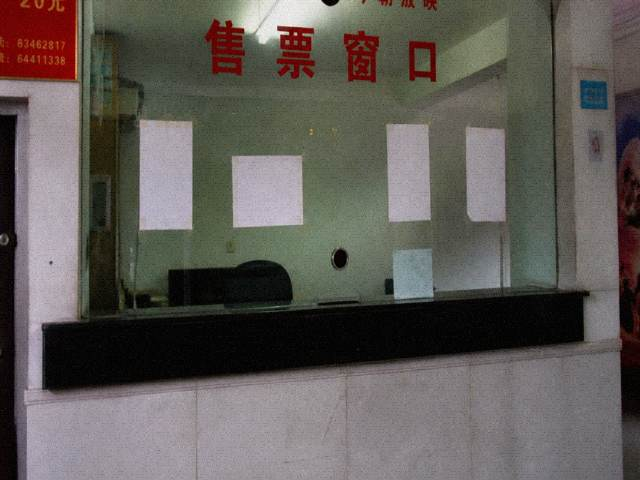

槐溪夜戏今起加场

为满足外地游客，夜戏加场。套票含后台参观。参观细节以现场安排为准。
退票规则见购票页。开锣后不退。开锣时间以演出当天系统为准。
本稿不提应工，不提检场告假。告假不是宣传内容。
阅读 802 赞 11

为满足外地游客，夜戏加场。套票含后台参观。参观细节以现场安排为准。
退票规则见购票页。开锣后不退。开锣时间以演出当天系统为准。
本稿不提应工，不提检场告假。告假不是宣传内容。
阅读 802 赞 11
公号原稿删节对照。一四年八月十八日推送。编辑是县文旅实习的，实习生没去过槐溪，稿子在办公室按折页抄。阅读 802，赞 11。发出去以后老周把删掉的句子存在草稿箱，草稿箱后来清过，清漏了这几行。
发出去的是：为满足外地游客，夜戏加场。套票含后台参观。参观细节以现场安排为准。退票规则见购票页。开锣后不退。开锣时间以演出当天系统为准。删掉的是：检场狄厚告假，告假不是宣传内容。后台两个字剧团没盖章。含了也不放人。放人要簿上有名。实习生把「含后台参观」从折页上原样搬进来，搬进来老周没拦，拦了这篇就少一个卖点。少一个卖点阅读到不了八百。八百是当时的内部数。内部数没完成领导问。问了就推。推完有人在留言里问后台从哪进，留言没回。没回是因为回了要写禁客，禁客跟标题打架。打架的句子不出现在公号正文。正文只到现场安排为准。为准两个字能挡住大部分人。挡不住的人会去购票页，购票页键是灰的。灰的对。本稿不提应工。不提应工是纪律，不是忘了。忘了的是实习生把槐溪写成了槐桥，发出前改回来了。改回来的痕迹在草稿箱。草稿箱不要外发。